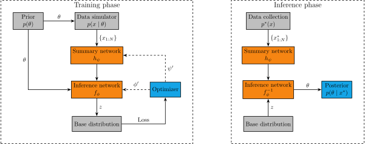

Amortized Bayesian Inference
with BayesFlow
Recap
Problem
We want to approximate \(p(\theta \mid x)\) or \(p(x \mid \theta)\)
\[ p(\theta \mid x) = \frac{p(\theta) \times p(x \mid \theta)}{p(x)} \]
- Evaluating \(p(\theta)\), \(p(x \mid \theta)\) and \(p(x)\) may not be tractable
- But we are able to sample \((x^{(s)}, \theta^{(s)}) \sim p(x, \theta)\)
Solution
Use generative neural networks
Inference network
- A generative neural network \(q_\phi(\theta \mid x)\)
- Normalizing flow, flow matching, …
- Model the distribution of parameters, conditioned on data
Goal:
\[p(\theta \mid x) \approx q_\phi(\theta \mid x)\]
Role of “data”
- \(x\) conditions the generative network
- Normalizing flows: Input to coupling network (usually MLP)
- Flow matching: Input to the vector field network (usually MLP)
\(\rightarrow\) Must be of fixed dimensions
Data of varying dimensions
- Sample sizes, study design, resolution, …
\(\rightarrow\) Summary statistics
- Handcrafted: Mean, SD, Correlation,…
- Summary networks
Summary network \(h_\psi\)
- Takes input of variable size
- Outputs fixed size embedding
\(\rightarrow\) Condition the inference network on the output of the summary network
\[p(\theta \mid x) \approx q_\phi(\theta \mid h_\psi(x))\]
Learning the posterior
\[ \begin{aligned} \hat{\phi}, \hat{\psi} = \operatorname*{argmin}_{\phi, \psi} & \mathbb{E}_{x \sim p(x)} \mathbb{KL}\big[p(\theta \mid x) || q_\phi(\theta \mid h_\psi(x))\big] = \\ = \operatorname*{argmin}_{\phi, \psi} & \mathbb{E}_{x \sim p(x)} \mathbb{E}_{\theta \sim p(\theta \mid x)} \log \frac{p(\theta \mid x)}{q_\phi(\theta \mid h_\psi(x))} \propto \\ \propto \operatorname*{argmin}_{\phi, \psi} & - \mathbb{E}_{(x, \theta) \sim p(x, \theta)} q_\phi(\theta \mid h_\psi(x)) \approx\\ \approx \operatorname*{argmin}_{\phi, \psi} & - \frac{1}{S}\sum_{s=1}^S \log q_\phi(\theta^{(s)} \mid h_\psi(x^{(s)})) \end{aligned} \]
\(\rightarrow\) must be able to generate samples \((x^{(s)}, \theta^{(s)}) \sim p(x, \theta)\)
Training the networks
- Define a generative statistical model
- \(p(x, \theta)\), typically \(p(\theta) \times p(x \mid \theta)\)
- Define inference and (optional) summary networks
- \(q_\phi(x \mid h_\psi(x))\)
- Train the networks
- Sample from \((x^{(s)}, \theta^{(s)}) \sim p(x, \theta)\)
- Optimize weights \(\phi\) and \(\psi\) so that \(p(\theta \mid x) \approx q_\phi(\theta \mid h_\psi(x))\)
Inference
- Once the networks are trained, they can be used for inference
- Most of computational resources are used during training
- Inference is fast (only requires a simple pass through the network)
\(\rightarrow\) Amortized inference: Pay upfront the cost of inference during training, making subsequent inference effective
Amortized Bayesian Inference

For more info, see Radev et al. (2020)
Working with bayesflow
BayesFlow (Radev, Schmitt, Schumacher, et al., 2023)
- Python library
- Implementation of common neural architectures to make ABI easier
- Helper functions for simulation, configuration, training, validation, diagnostics,…
Old version
- Build on
TensorFlow - Previous projects build with it
- Bespoke syntax, not that transparent
- Stale development (no new features), being deprecated
- stable legacy branch on GitHub
pip install git+https://github.com/bayesflow-org/bayesflow@stable-legacy
New version
- Built on
kerasTensorFlow,JAX, orPyTorchas a backend
- Modern interface, more transparent, faster
- Released very recently
- Active development, future standard
- main branch on GitHub
pip install git+https://github.com/bayesflow-org/bayesflow@main
General workflow

Ingredients
- Simulator
- Simulate data from the statistical model
- Adapter
- Configure the data
- Summary network (optional)
- Get summary embeddings
- Inference network
- Approximate the posterior
Quality of life
- Diagnostics
- Plots and statistics to evaluate the approximation
- Approximator
- Hold ingredients necessary for approximation together
- Adapter, Summary network, Inference network
- Workflow
- Hold ingredients for the entire pipeline together
- Simulator, Adapter, Summary network Inference network, Diagnostics
General pipeline
- Define the statistical model (through simulator)
- Define the approximator (through neural networks)
- Train the neural networks
- Validate the approximator
- Inference and diagnostics
1. Define the statistical model
Define the simulator
- Define the “statistical” model in terms of a simulator
bayesflowexpects “batched” simulations
Define the simulator
- Define the “statistical” model in terms of a simulator
bayesflowexpects “batched” simulationsmake_simulator: Convenient interface for “auto batching”
Simulator: Data of varying size
- The shape of data must be the same within each batch
Strategies:
- Pad vectors to be the same length
- Vary data shapes between batches
Pad/mask vectors
Python
def context():
return dict(n = np.random.randint(10, 101))
def prior():
return dict(mu = np.random.normal(0, 1))
def likelihood(mu, n):
observed = np.zeros(0)
observed[:n] = 1
x = np.zeros(100)
x[:n] = np.random.normal(mu, 1, size=n)
return dict(observed=observed, x=x)
simulator = bf.make_simulator([context, prior, likelihood])
simulator.sample(10)Vary data shape between batches
Padding vs batched context
- Both approaches work
- Batched context is a bit cleaner
- Do not have to fiddle with masking
- Limited useability (cannot effectivelly use in offline mode)
- Padding
- More verbose
- More general
2. Define the approximator
Approximator
- Inference network
- Generates distributions
- (Optional) summary network
- Generates summary embeddings
- Adapter
- Reshapes data to be passed into networks
Inference network
Various options available, see the Two Moons Example.
What architecture to pick?
Coupling flow
- Slow training
- Less expressive
- Faster during inference
Flow matching
- Fast training
- More expressive
- Slow inference on CPU
What architecture to pick?
- Affine coupling for low-dimensional, uni-modal posteriors
- Spline coupling for harder posteriors, including multi-modal
- Flow matching for highly complex posteriors
- or when inference speed is not of concern
- or if GPUs available
Summary network
- Extract all relevant information from the variable-sized data
- Output fixed sized embeddings
- “Sufficient statistics”
- Rule of thumb: output size should be at least \(2\times\) the number of parameters
What architecture to pick?
Reflect symmetries in the data
Exchangeable data
- Deep Sets, Set Transformers,…
Time series, Sequences, …
- RNNs, CNNs, Transformers, …
Adapter: Main purpose
- Reshapes data to be passed into networks
- A hub that handles what is passed into what network
Main keywords:
"inference_variables": What are the variables that the inference network should learn about?- \(q(\theta \mid x) \rightarrow\) parameters \(\theta\)
"inference_conditions": What are the variables that the inference network should be directly conditioned on?- \(q(\theta \mid x) \rightarrow\) data \(x\)
"summary_variables": What are the variables that are supposed to be passed into the summary network?- \(q(\theta \mid f(x)) \rightarrow\) data \(x\)
Adapter
Python
- Transform variables
.standardize.sqrt,.log.constrain
- Reshape variables
.as_set,.as_time_series.broadcast.one_hot
- … and many more operations
Approximator
- Holds ingredients used for inference
Workflow (optional)
- Hold all ingredients used for training, inference, and diagnostics
3. Train the neural networks
Network training
In principle, training as any other model in
kerasapproximator.fit
Define optimizer (e.g.,
keras.optimizers.Adam)- (optional) define schedule, early stopping,…
Define training budget and regime
- Number of epochs
- Batch size, Number of batches
- Simulate data or supply simulator
Compile and train the model until convergence
BasicWorkflowmakes fitting easier, comes with some predefined reasonable settings- e.g.
workflow.fit_online
- e.g.
Training regimes
Online
- Generate data during training
- Slower to train
- Prevents overfitting
Offline
- Train on fixed data
- Faster to train
- Risk of overfitting
From disk
- Offline training
- Large data that does not fit into memory
- Read data on demand during training
4. Validate the approximator
Goals
- Is the neural approximator doing a good job at approximating the true posterior?
- “Computational faithfulness”
- Assesses the quality of approximator
- How much can we expect to learn given data?
- Parameter recovery, posterior contraction, posterior z-score
- Assesses how the statistical model interacts with data
For general discussion, see Schad et al. (2021).
Procedure
- Draw fresh validation data from the simulator
- Extract the parameter samples from the prior
- Sample from the posterior
Simulation-based calibration (SBC, Talts et al., 2018)
- Testing computational faithfulness of a posterior approximator
- Posterior distribution averaged over prior predictive distribution is the same as the prior distribution
\[ p(\theta) = \int \int p(\theta \mid \tilde{y}) \underbrace{p(\tilde{y} \mid \tilde{\theta}) p(\tilde{\theta})}_{\text{Prior predictives}} d\tilde{\theta} d \tilde{y} \]
Simulation-based calibration
- Draw \(N\) prior predictive datasets \((\theta_i^{\text{sim}}, y_i^{\text{sim}}) \sim p(\theta, y)\)
- For each data set \(y_i\), draw \(M\) samples from the approximate posterior: \(\theta_{ij} \sim q(\theta \mid y_i^{\text{sim}})\)
- Calculate rank statistic \(r_i = \sum_{j=1}^M \text{I}\big(\theta_{ij} < \theta_i^{\text{sim}}\big)\)
Simulation-based calibration
Simulate
\[ \begin{aligned} \theta^{\text{sim}} & \sim p(\theta) \\ y^{\text{sim}} &\sim p(y \mid \theta^{\text{sim}}) \end{aligned} \]
By symmetry
\[ \begin{aligned} (\theta^{\text{sim}}, y^{\text{sim}}) & \sim p(\theta, y) \\ \theta^{\text{sim}} &\sim p(\theta \mid y^{\text{sim}}) \end{aligned} \]
Compute
\[ \begin{aligned} \theta_1, \dots, \theta_M & \sim q(\theta \mid y^{\text{sim}}) \\ \end{aligned} \]
If \(q(\theta \mid y^{\text{sim}}) = p(\theta \mid y^{\text{sim}})\), then the rank statistic of \(\theta^{\text{sim}}\) is uniform.
Visualizing SBC
- Histograms
- ECDF
- ECDF difference
SBC Histograms
SBC ECDF

SBC ECDF Difference

SBC interpretation
- Necessary but not sufficient condition
- ✅ All faithful approximators should pass the SBC check
- ⚠️ An unfaithful approximator may pass the SBC check
- Depends on
- Simulation budget (how many datasets)
- Approximation precision (how many posterior draws per data set)
- \(\rightarrow\) degree/ways of miscalibration, rather than ok/not ok
What if SBC check fails?
- Possible causes:
- Underfitting \(\rightarrow\) increase expresiveness of inference or summary network, increase training budget
- Overfitting \(\rightarrow\) decrease expressiveness of inference or summary network, increase training budget
- Coding error \(\rightarrow\) check for errors in the simulator, setting up the approximator
- Fundamental problem with the statistical model \(\rightarrow\) change the statistical model
Posterior z-score
- How well does the estimated posterior mean match the true parameter used for simulating the data?
\[ z = \frac{\text{mean}(\theta_i) - \theta^{\text{sim}}}{\text{sd}(\theta_i)} \]
Posterior contraction
- How much uncertainty is removed after updating the prior to posterior?
\[ \text{contraction} = 1 - \frac{\text{sd}(\theta_i)}{\text{sd}(\theta^{\text{sim}})} \]
Z-score vs. contraction plot
Parameter recovery
- Plot the true parameter values \(\theta^{\text{sim}}\) against a posterior point estimate (mean, median)

What if I get poor results
- Possible causes:
- Poor calibration of the approximator \(\rightarrow\) see SBC
- Poor identification of the parameters
- Use more informative priors
- Change the model
- Add more data (sample size, additional variables)
5. Inference and diagnostics
Obtain posterior samples
Model misspecification
- Prior misspecification
- Likelihood misspecification
\(\rightarrow\) Approximator may not be trusted
Posterior predictive checks
- Use posterior parameter posterior to simulate data from the simulator
- Compare simulated data to observed data
- Visual checks - histograms, ecdf plots, scatter plots, …
- Comparing summary statistics - means, variances, …
Use summary space
- Add a base distribution to the summary network, e.g.

Schmitt et al. (2023)
Conclusion
Uses of BayesFlow
In addition to learning \(p(\theta \mid x)\):
- Generative modeling tasks
- Surrogate likelihood: \(p(x \mid \theta)\) (Radev, Schmitt, Pratz, et al., 2023)
- Model comparison: \(p(\mathcal{M} \mid x)\) (Elsemüller et al., 2024; Radev et al., 2021)
- Amortized point estimation: \(\hat{\theta}\) (Sainsbury-Dale et al., 2024)
Complex models
- Think about possible factorizations of the model
- Split the problem into multiple smaller pieces
- Examples:
- Multilevel models (Habermann et al., 2024)
- Mixture models (Kucharský & Bürkner, 2025)
Advantages
- Fast inference
- Simulation based – intractable models
Disatvantages
- Need for training
- Simulation based – weaker guarantees
When to use ABI
- Fast inference needed, e.g.
- Fitting hundreds of datasets
- Online estimation (e.g., during an experimental setup)
- Intractable models
We do these things not because they are easy, but because we thought they were going to be easy.
— misquote of John F. Kennedy, unknown author
Resources:
- BayesFlow website: documentation, examples
- BayesFlow forum: ask questions about your use cases
- BayesFlow repository: contribute, submit bug reports, feature requests
References

Amortized Bayesian Inference